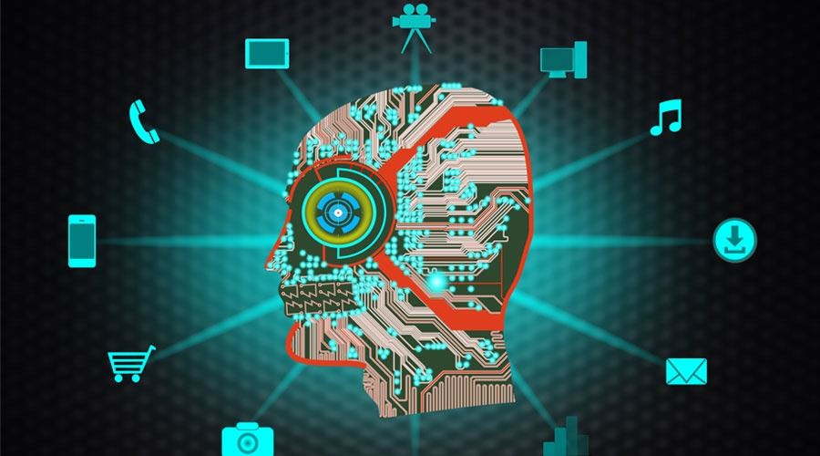
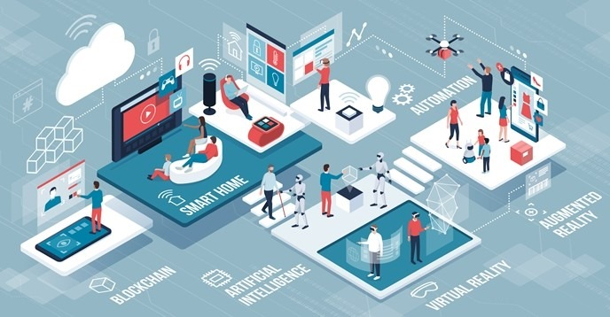
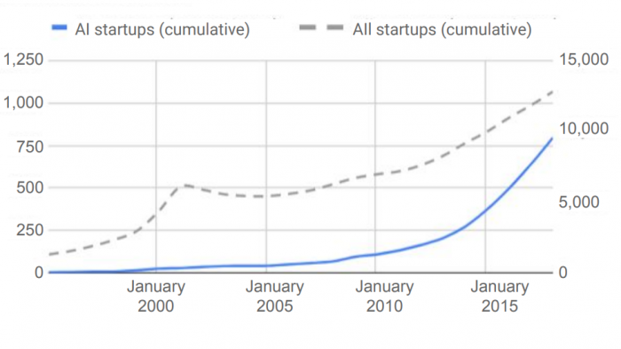
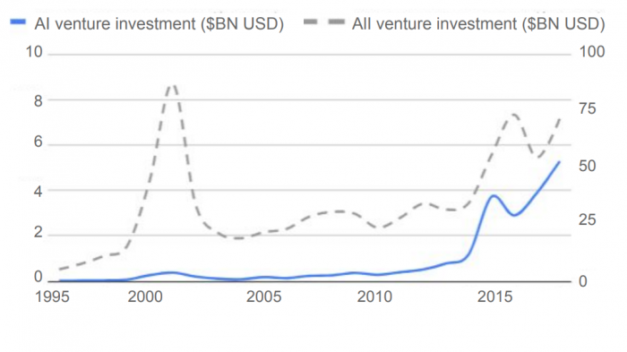

The Importance Of Artificial Intelligence page
Links:
The importance of artificial intelligence in this world:
There are many advantages that artificial intelligence possesses, and the use of this intelligence on machines and devices makes solving any problem easier, through which the problem can be known and solved using the logical method. Nowadays, It can know the sounds and some speak. Very useful in learning greatly, it can provide the solutions you want without any human intervention, and this is the biggest achievement at any time. It handles any information anyone can turn to. It has great ability to understand data and analyze it well. This artificial intelligence finds any solution to any problem that humans cannot solve and know. It is very important in education until we find that he gets a distinguished approach to education, so that it helps the student to know the level he has, and also get any program that he requests, and this helps the student a lot and he cannot give up in light of his education to reach the required success for him, and understand the most difficult things in education. It also has a developed and modern importance in homes, where there are many devices in the house that we can control such as lighting, closing doors and many other devices that we control recently from afar, so we find that these things have evolved in every period to reach the tremendous progress Unparalleled, we cannot now give up a computer or any device that uses artificial intelligence.
 
Curves:
1. AI is being commercialized at a dizzying pace.

The amount of money being poured into AI startups is remarkable. The number of AI startups (top) is shown on the left, compared with total startups on the right. AI investment (below) is shown on the left, compared with total investments on the right. This speaks to huge opportunities to use machine learning in different industries, but also to a market that is hyped and overheated.
